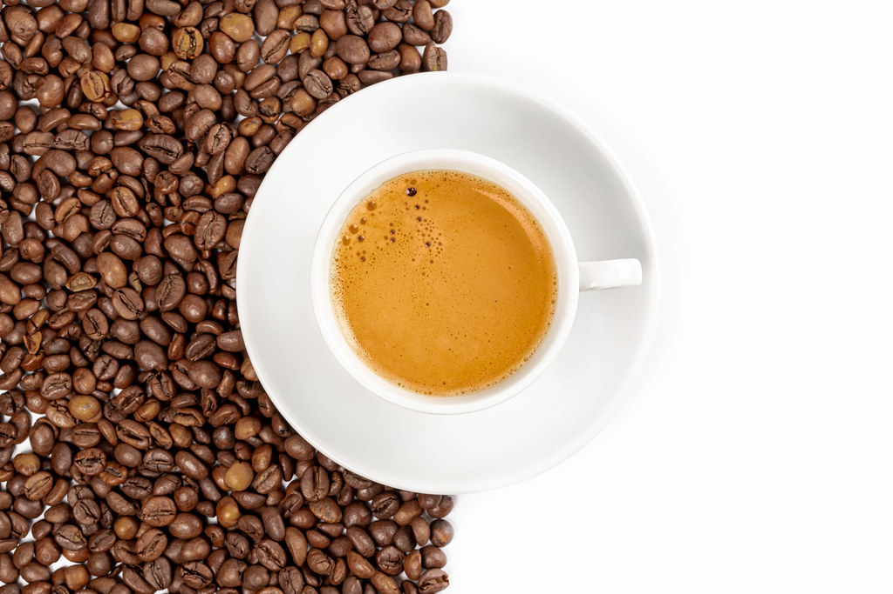

Coffee

- Coffee:
- coffee, beverage brewed from the roasted and ground seeds of the tropical evergreen coffee plants of African origin. Coffee is one of the three most popular beverages in the world (alongside water and tea) and one of the most profitable international commodities. Though coffee is the basis for an endless array of beverages, its popularity is mainly attributed to its invigorating effect, which is produced by caffeine, an alkaloid present in coffee.
Read more about coffee in: https://www.britannica.com/topic/coffee